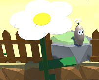

Education & Projects
University of Maryland, University College
Graduate Certificate
Instructional Design
- Developed Project-Based Lesson Plans
- Improved Personal Pedagogical and Technical Skill-Set
- Applied New Software to be Used as Formative and Summative Assessments
August 2006 - May 2010
American University
Masters of Arts
Game Design
- Museum Manager, Augmented Reality simulation game
- Tour of Williamsburg, Virtual Reality 3D modeling of historical buildings
- Toxicity, 3D Digital Game of immune response
- An Appeal for Convergence: How Digital Games Can Improve and Inform Classroom Instruction, Research Paper
- Tater, A Digital Game that teaches the essential ingredients of growing plants
- Sprouts, Boardgame relating to farming and resource management
August 2006 - May 2010
Mary Baldwin College
Teacher Licensure
Middle School Life Science
- Darwin's Angry Finches, Board game teaching natural selection
- Taxonomy of Fantasy Creatures, Card game teaching taxonomy
August 2011 - May 2012
Liberty University
Bachelors of Science
Psychology
- Gender Analysis of Video Game Play, Thesis
August 2002 - May 2006
Virtual Reality tour of Williamsburg

Toxicity, A science based first person shooter game

Tater, a children's platformer game that teaches how plants grow
Skills
Programming Languages & Tools
- C#
- HTML5
- CSS
- Unity 3D
- Blender
- Adobe Illustrator
- Git/GitHub
Instructional Design & Education Tools
- Blackboard
- Kaltura
- Microsoft Office Suite